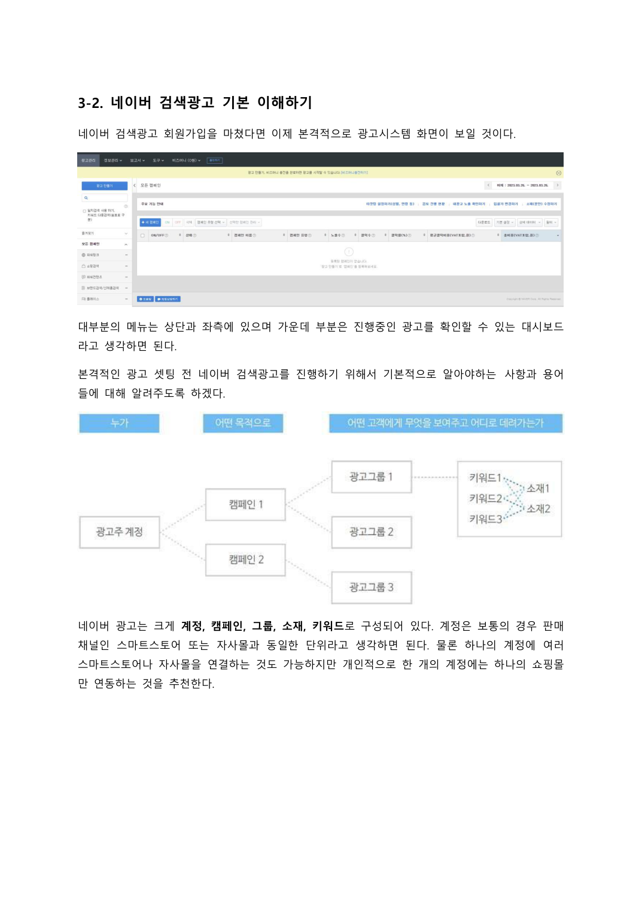
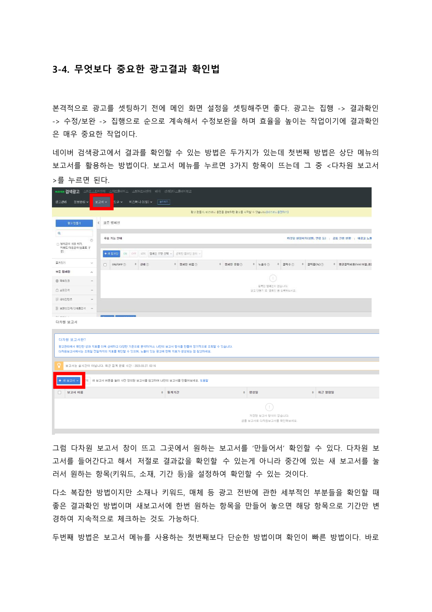

광고 세팅부터 운영까지,네이버 검색광고실전 가이드
설정하고 결과를 읽고 다시 고치는 법
파워링크와 쇼핑검색의 기본부터
키워드·소재·결과 확인까지.
내 광고에서 볼 항목을 순서대로 짚습니다.
이 책이 필요한 순간
광고를 켰는데
무엇을 봐야 할지 모르겠다면
캠페인, 그룹, 소재, 키워드. 이름부터 낯설다면 전체 구조를 먼저 살펴보세요. 이 책은 기본 설정과 운영 예시를 이론편·실전편으로 나눠 설명합니다.
책 속에서 먼저 확인하세요
구조를 이해하고
확인할 항목을 찾습니다
원문에는 광고 계정의 구조도와 설정 화면이 실려 있습니다. 화면을 보며 개념을 익히고, 결과를 확인하는 순서를 살펴보세요.


제공된 원문에서 가져온 본문 자료입니다.
이 책에서 다루는 것
파워링크·쇼핑검색 설정과 운영의 기본
광고의 기본 구조
계정·캠페인·그룹·소재·키워드의 역할을 짚습니다.
파워링크와 쇼핑검색
두 광고 유형의 차이와 기본 설정 과정을 다룹니다.
키워드와 소재
키워드를 찾고 넓히는 방법, 확장소재 활용 예시를 살핍니다.
결과 확인과 운영
보고서를 읽고 설정을 점검하는 흐름을 설명합니다.
내 일에 적용하기
내 광고에서 볼 것을
먼저 정리해보세요
광고 유형
내 상품에 사용할 광고 유형을 정리합니다.
설정 항목
키워드와 소재를 어떻게 구성했는지 적습니다.
결과 확인
어떤 항목을 보고 수정할지 목록으로 만듭니다.
내 상품은 [상품]이고 현재 광고 상황은 [상황]입니다. 첨부한 책에서 광고 구조와 결과 확인 내용을 찾아, 내가 점검할 항목을 정리해주세요. 책의 예시와 내 광고의 실제 수치는 구분해주세요.
활용 예시입니다. AI의 답은 원문과 내 상황에 맞는지 확인하세요.읽고 보관하고 다시 꺼내 쓰세요
전자책과 지식 파일을
함께 받습니다
편하게 읽는 전자책
컴퓨터와 모바일에서
본문을 읽는 파일입니다.
내 자료로 쓰는 지식 파일
압축을 풀어 Obsidian에서 열거나
AI에 참고 자료로 넣어보세요.
지식 파일은 Obsidian/AI용 자료입니다.
AI가 자동 실행되거나 내용을 영구 학습하는 프로그램은 아닙니다.
결제 후 이렇게 받으세요
구매 이메일로 온 메일에서
자료 받기를 누르세요.
로그인 없이 14일 동안,
파일당 3회 다운로드할 수 있습니다.
다시 받을 때는 같은 구매 이메일로
라운지에서 재다운로드하세요.
이런 분께 권합니다
- 네이버 검색광고의 기본 구조부터 이해하고 싶은 분
- 대행사와 이야기할 때 광고 항목을 직접 확인하고 싶은 분
종이책이 배송되나요?
종이책 배송 없이 PDF와 지식 파일 ZIP을 받는 디지털 상품입니다.
AI나 Obsidian을 꼭 써야 하나요?
PDF만 읽어도 됩니다. 지식 파일은 책을 보관하거나 AI에 참고 자료로 넣고 싶을 때 활용하세요.
광고 화면이 책과 다르면 어떻게 하나요?
책의 수록 화면은 집필 당시 예시입니다. 설정할 때는 현재 광고 관리자 화면의 항목과 안내를 확인하세요.
다음 선택에 참고할 한 권
네이버 검색광고 종결서
파워링크·쇼핑검색 설정과 운영의 기본
구매 이메일을 정확히 입력해주세요.